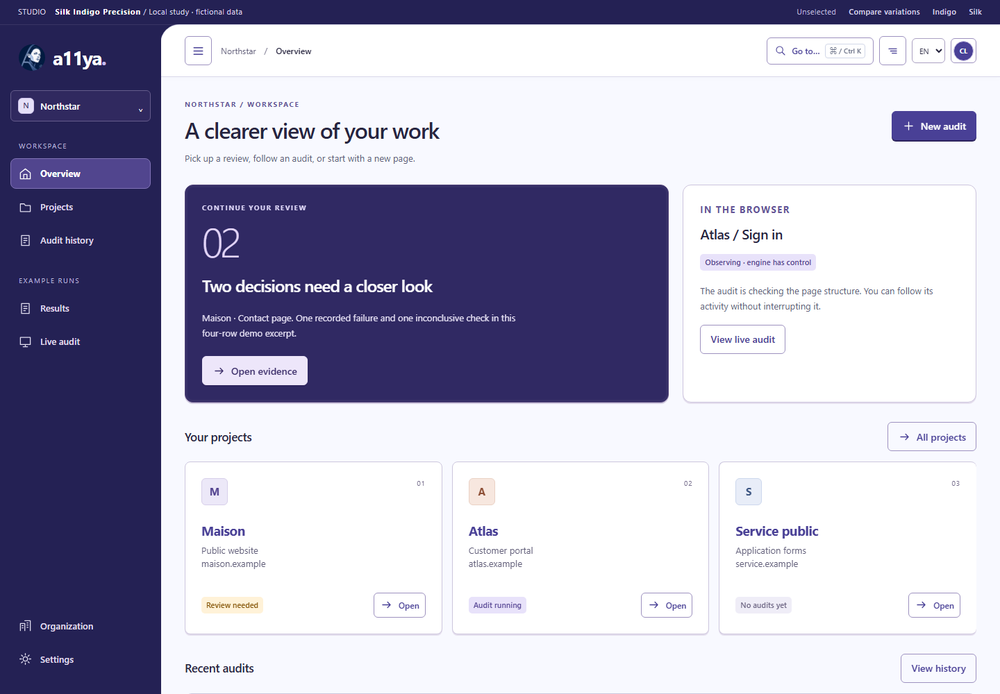

01 / CONNECTED SURFACES
Silk Indigo
A connected project sheet, soft depth, dark indigo summary and separate desktop/journal panels.
Open Indigo ↗A11YA / SILK INDIGO
Silk’s shell and overview, Pulse’s indigo, Vector’s boundaries and Forma’s desktop with a run journal.
01 / CONNECTED SURFACES
A connected project sheet, soft depth, dark indigo summary and separate desktop/journal panels.
Open Indigo ↗
02 / INDIVIDUAL FRAMES
Separately outlined projects, lighter review summary and a joined desktop/journal frame with an indigo journal header.
Open Precision ↗